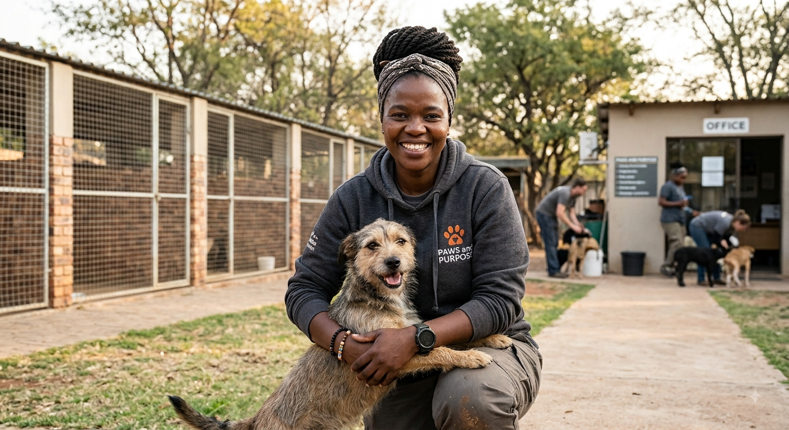
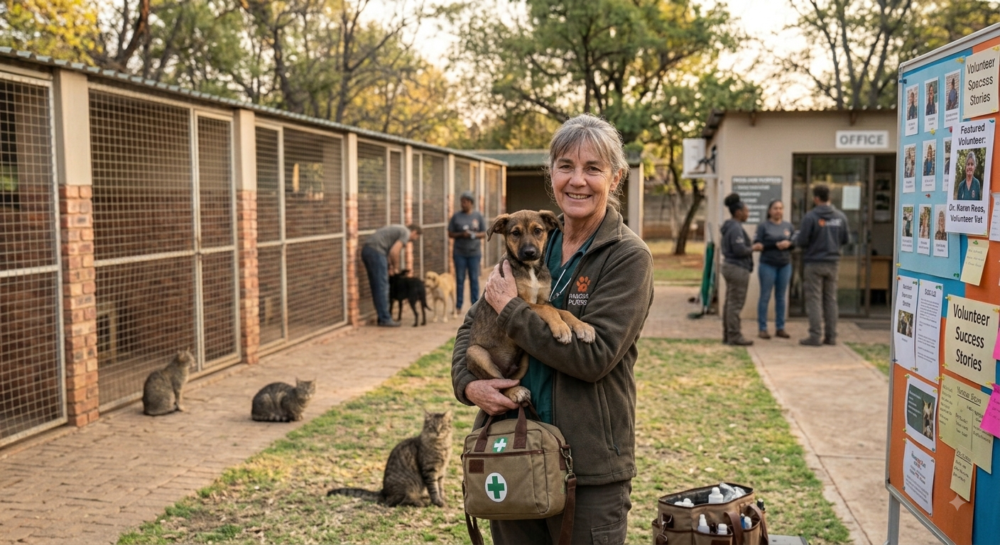

Our Story
Founded by a small group of community volunteers, Paws & Purpose has grown into a trusted local shelter.
Our History
Paws & Purpose began in 2019 when a hanful of neighbours noticed a growing number of stray animals in the area and decided to act. What started as an informal foster care in spare rooms and garages has since grown into a registered non-profit shelter with a small permanent facility, a network of foster homes and a dedicated team of volunteers.
To date the shelter has rehomed hundreds of cats and dogs and runs a low cost sterilisation program aimed at reducing the number of animals entering shelters each year.
Mission & Vision
Mission
To rescue, rehabilitate and rehome abandoned animals while reducing animal homelessnes through education and affortable sterilisation.
Vision
A community where every companion animal has a safe, loving home and no animal is left to fend for itself on the street.
Meet the team
Lindiwe Mokoena
Founder and shelter manager

I've always adored critters ever since I was a child. In 2019 I made it a mission to start an organazation that helps abandoned animals get rehomed and of the streets. It puts a smile on my faces when I see the animals being adopted. I pray that Paws & Purpose becomes nationwide or better yet worldwide.
Dr Sipho Nkosi
Volunteer Veterinarian

I am a hard-working and an energetic Veterinarian, who has a passion for animals. I qualified from the University of Pretoria in 2022, and it has been a privillege to join the Paws & Purpose.
Amanda Petersen
Volunteer Coordinator

I am such an animal lover. Graduatated at North West University in BSc Agric in Animal Health. Nothing brings me warmth than seeing the animals at the shelterget adopted. That is the best feeling ever. I joined Paws & Purpose in 2024 and have since been a volunteer at the shelter.
Dr Karin Roos
Volunteer Veterinarian

Dr Roos has been at Paws & Purpose since 2021. She graduatated at University of Pretoria in 2012. She's the senior veterinarian at Paws & Purpose. She has since retired but is great help here at Paws & Purpose.